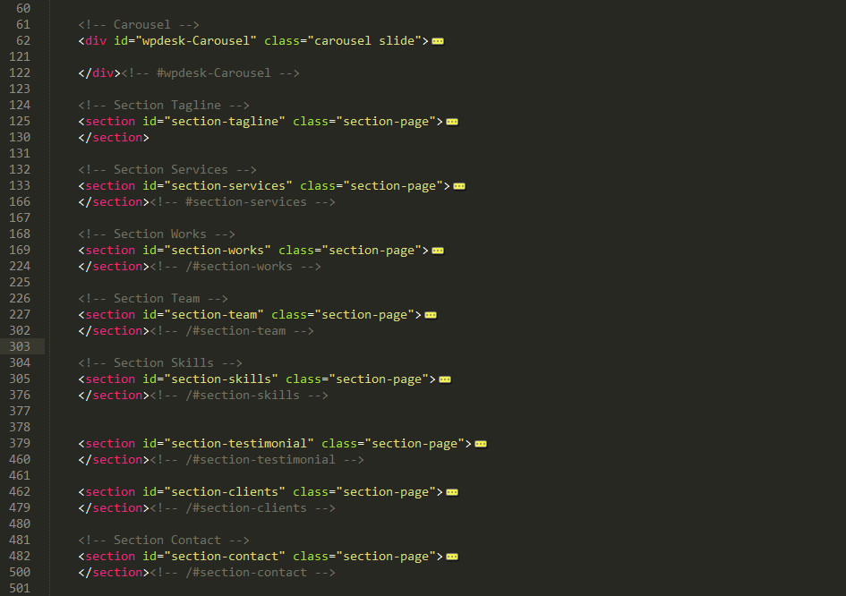

Created: 12/9/2013
By: Wpdesk
Email: studio.wpdesk@gmail.com
Thank you for purchasing my theme. If you have any questions that are beyond the scope of this help file, please feel free to email via my user page contact form here. Thanks so much!
This template consists of 8 sections without header and carousel, footer, So that each section has its own color and Within each section consists of a set of columns you can edit color each section from file "lovinflat.less" from folder "less" but you need to compile files less to file CSS.
This Template contains all files less you can edit any think in template very easily
If you would like to edit the color Template go to file variables.less in folder less and search variable @lovinflat-color and then replace the default color, Now need to compile all files less to file one CSS this link will help you.
template using framework bootstrap 3 this framework contains many files less and all files less compiled to one file is "bootstrap.css" in file "CSS", to be able to modify the style template lovinflat should edit files ".less" and compile all files ".less" in one file "bootstrap.css", file responsible on style this template is "lovinflat.less", but how do i compile files ".less" to one file bootstrap.css? this link will help you
This theme imports many Javascript files.
I've included one psds with this theme contains all the layers template:
If you'd like to change the logo in the header, open "Lovinflat - One Page.psd", make the necessary adjustments, and then save the file as "logo-loveinflat.png".
Include any more specific information about your psds.
I've used the following images, icons or other files as listed.
Once again, thank you so much for purchasing this theme. As I said at the beginning, I'd be glad to help you if you have any questions relating to this theme. No guarantees, but I'll do my best to assist. If you have a more general question relating to the themes on ThemeForest, you might consider visiting the forums and asking your question in the "Item Discussion" section.
Wpdesk